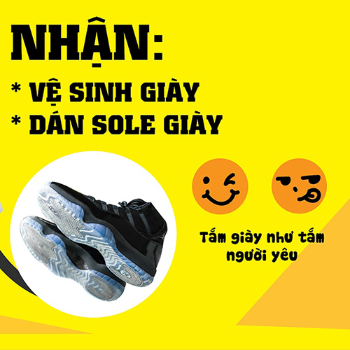
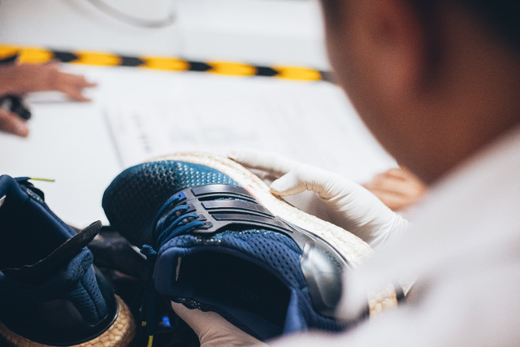
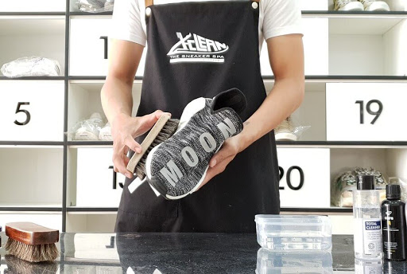

CHĂM SÓC GIÀY CỦA BẠN TẠI - HOANGPHUCSTORE.VN
- Vệ sinh giày kỹ lưỡng, thời gian 48 giờ kể từ lúc khách hàng gửi giày tới cửa hàng
- Quy trình vệ sinh giày chuyên nghiệp. Hấp khử mùi, nấm khuẩn bằng máy chuyên dụng. Dung dịch vệ sinh nhập khẩu chuyên dành cho giày SNEAKER.
Kỹ thuật viên lành nghề & tận tâm.
HOÀNG PHÚC STORE chăm sóc cẩn thận từng đôi giày với quy trình kiểm soát chất lượng gắt gao, đảm bảo không làm hư giày. Đội ngũ giao nhận riêng
được đào tạo bài bản, biên nhận rõ ràng & hệ thống đánh tag tránh mất giày. Minh bạch, tin cậy, và tuyệt đối an tâm.

Cách vệ sinh giày Sneaker
• Khi vệ sinh và bảo quản giày, điều quan trọng nhất làm làm sao không làm ảnh hưởng đến chất lượng giày. Một số mẹo giặt giày của mình
• Đừng giặt giày liên tục sau mỗi lần sử dụng. Giày sẽ rất mau hư nếu bạn nhúng nước nó quá thường xuyên: bị hở keo đế, hoặc phần vật liệu thân giày bị mục.
• Đừng giặt giày bằng máy giặt. Nếu bạn lười biếng và muốn dùng máy giặt, chỉ nên làm thế vài tháng một lần.
• Không bao giờ bỏ vào máy sấy. Nhiệt độ của hơi sấy sẽ làm hỏng vật liệu thân giày, làm giày mất form, đồng thời gây ảnh hưởng tiêu cực đến chất lượng keo
dán giày. • Đừng ngâm giày trong nước quá lâu. Giày khác với quần áo vì nó có keo dán giữa thân giày và đế giày. Phần keo dán này không thích bị ngâm nước
đâu. Mình thường dùng vòi nước xịt thẳng vào bề mặt giày để tống khứ vết bẩn, nhanh gọn lẹ.
• Hạn chế dùng xà bông. Trừ khi giày quá dơ dùng nước không sạch, bạn mới nên sử dụng xà bông pha loãng.
• Dùng giấy báo nhét vô giày sau khi giặt xong. Bạn có để ý mỗi lần mua giày về đều thấy có giấy nhét trong giày không? Mục đích của nó là để giữ form giày.
Vì thế, mỗi lần giặt xong, bạn nên kiếm giấy báo nhét vô giày rồi mới đem phơi.
HOÀNG PHÚC STORE Chúc các bạn sẽ luôn có những đôi giày Sneaker bền đẹp!

CÁC THƯƠNG HIỆU GIÀY THƯỜNG XUYÊN ĐƯỢC KINGSHOES VỆ SINH - CHĂM SÓC:
- GUCCI, Yeezy 350 , Yeezy 500, Yeezy 700, Ultraboost, Prophere, Air max 270, Air force 1, Air max 97, NMD R1, Human race, Superstar, Stansmith......
